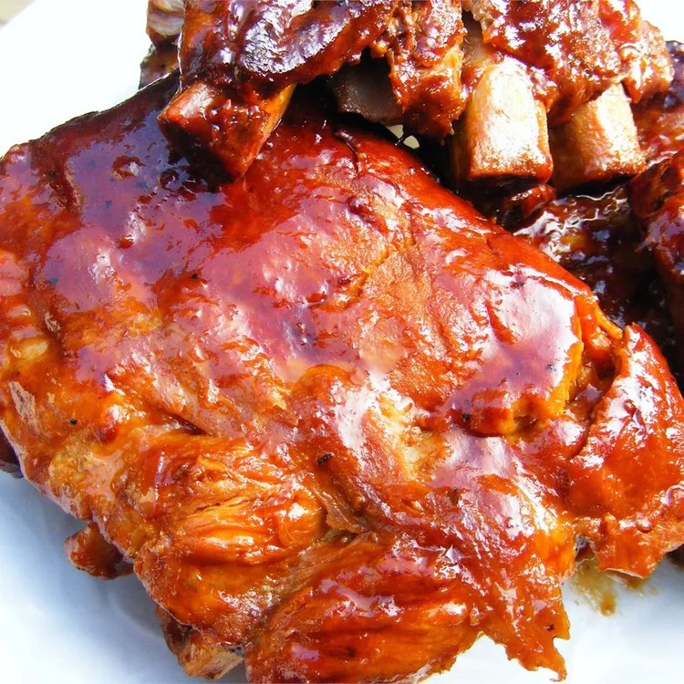

Barbecue Ribs

The ingredients
This is an easy and delicious way to prepare tender barbecued ribs without the barbecue!
- 4 pounds pork baby back ribs
- Salt and pepper to taste
- 2 cups of ketchup
- 1 cup chili sauce
- 1/2 cup packed brown sugar
- 4 tab;espoons vinegar
- 2 teaspoons dried oregano
- 2 teaspoons Worcestershire sauce
- 1 dash hot sauce
Steps to follow
- Step 1: Preheat oven to 400 degrees F (200degrees C)
- Step 2: Season ribs with salt and pepper. Place in a shallow baking pan. Brown in oven 15 minutes. Turn over, and brown another 15 minutes; drain fat.
- Step 3: In a medium bowl, mix together the ketchup, chili sauce, brown sugar, vinegar, oregano, Worcestershire sauce, hot sauce, and salt and pepper. Place ribs in slow cooker. Pour sauce over ribs, and turn to coat.
- Step 4: Cover, and cook on Low 6 to 8 hours, until ribs are tender.